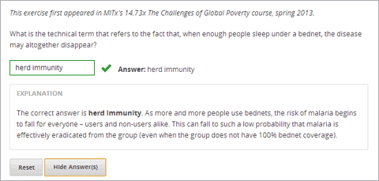

在文本输入问题中，学习者要输入文本到回答指定区域内.这个回答可以是数字，字母，和特殊字符(比如标点符号). 因为学习者输入的文本必须和教师给的答案精确匹配,包括大小写和标点符号,所以我们建议你指定不止一个正确答案允许大小写不同和排版排版.
对于在你课程中的文本输入问题,你可以使用edX Insights查看学习者的学习数据并且检查学习者提交的答案.更多信息，请查看`Using edX Insights`_.
你可以通过简单编辑器和高级编辑器创建一个文本输入问题. 可以在简单编辑器中设置一个问题，然后切换到高级编辑器来添加更多的XML中的配置选项. 但是,你不能从高级编辑器切换回简单编辑器。因此,你可能会想要尽可能完全地确定问题的格式在你开始使用先进的编辑器之前。
要使用 简单编辑器 创建一个文本输入问题,有以下的步骤.
在你想要创建问题的单元里, 在 添加新组件 下方选择 问题.
常见问题类型, 选择 文本输入. 添加一个文本输入问题到单元中.
选择 编辑. 简单编辑器就打开了.
用你自己的问题文本替代样本问题文本.
确定你想让学生回答的问题的文本描述,用双肩括号括住 (>>问题<<).这个问题文本是这个问题的访问标记。
选择你设置的答案文本, 然后在工具栏选择**文本输入**.在每个选项的旁边就出现了一个(=)号.
你可以设置不止一个正确答案.更多信息，请查看:ref:文本框问题中的多个答案.
要提供一解释, 选解释文本然后从工具栏中选择*解释**. 解释 出现解释文本的前面和后面。
选择 设置**并为这个问题提供一个识别 **显示名称.
为这个问题定义额外的设置. 更多相关信息,请查看： 问题设置.
选择 保存.
以下文本对于上面的详细解释。
>>What is the technical term that refers to the fact that, when enough people
sleep under a bednet, the disease may altogether disappear?<<
= herd immunity
[explanation]
The correct answer is herd immunity. As more and more people use bednets,
the risk of malaria begins to fall for everyone – users and non-users alike.
This can fall to such a low probability that malaria is effectively eradicated
from the group (even when the group does not have 100% bednet coverage).
[explanation]
使用高级编辑器编辑一个文本输入问题,有以下的步骤.
问题代码:
<problem>
<p>
<em>This problem is adapted from an exercise that first appeared in MITx's 14.73x The Challenges of Global Poverty course, spring 2013.</em>
</p>
<p>What is the technical term that refers to the fact that, when enough people sleep under a bednet, the disease may altogether disappear?</p>
<stringresponse answer="herd immunity" type="ci regexp">
<additional_answer>community immunity</additional_answer>
<additional_answer>population immunity</additional_answer>
<textline size="20" label="What is the technical term that refers to the fact that, when enough people sleep under a bednet, the disease may altogether disappear?"/>
<hintgroup>
<stringhint answer="contact immunity" type="ci" name="contact_immunity_hint" />
<hintpart on="contact_immunity_hint">
<startouttext />
In contact immunity, a vaccinated individual passes along his immunity to another person through contact with feces or bodily fluids. The answer to the question above refers to the form of immunity that occurs when so many members of a population are protected, an infectious disease is unlikely to spread to the unprotected population.
<endouttext />
</hintpart >
<stringhint answer="firewall immunity" type="ci" name="firewall_immunity_hint" />
<hintpart on="firewall_immunity_hint">
<startouttext />
Although a firewall provides protection for a population, the term "firewall" is used more in computing and technology than in epidemiology.
<endouttext />
</hintpart >
</hintgroup>
</stringresponse>
<solution>
<div class="detailed-solution">
<p>Explanation</p>
<p>The correct answer is <b>herd immunity</b>. As more and more people use bednets, the risk of malaria begins to fall for everyone – users and non-users alike. This can fall to such a low probability that malaria is effectively eradicated from the group (even when the group does not have 100% bednet coverage).</p>
</div>
</solution>
</problem>
你可以指定不止一个正确答案对于一个文本输入问题.比如不是要求学习者输入准确的输入”Dr. Martin Luther King, Junior”你也可以允许学习者输入”Martin Luther King”,”Doctor Martin Luther King”或者其他答案。要做到这个，你可以使用过简单编辑器也可以使用高级编辑器。
要在简单编辑器指定其他的正确答案，需要在其他每个的正确答案前都加上 “or=”。
示例：
>>What African-American led the United States civil rights movement during the 1960s?<<
= Dr. Martin Luther King, Jr.
or= Dr. Martin Luther King, Junior
or= Martin Luther King, Jr.
or= Martin Luther King
要在高级编辑器中指定其他的正确答案,添加一个``<additional_answer>``在每个正确答案打开和关闭``<stringresponse>``标签里面.
示例: .. code-block:: xml
<problem>
<p>What African-American led the United States civil rights movement during the 1960s?</p>
- <stringresponse answer=”Dr. Martin Luther King, Jr.” type=”ci” >
- <additional_answer>Dr. Martin Luther King, Junior</additional_answer> <additional_answer>Martin Luther King, Jr.</additional_answer> <additional_answer>Martin Luther King</additional_answer> <textline label=”What African-American led the United States civil rights movement during the 1960s?” size=”20”/>
</stringresponse>
</problem>
一般来说,文本输入问题默认大小写不敏感。你可以改变这些并且要求回答区分大小写.
要使文本输入问题大小写敏感你必须使用:ref:高级编辑器.
在高级编辑器中，对于大小写敏感答案，你可以看到在``stringresponse``元素里的``type``=``ci``,下面是一个示例：
<stringresponse answer="Michigan" type="ci">
<textline size="20"/>
</stringresponse>
To make the response case sensitive, change the value of the type
attribute to cs.
<stringresponse answer="Michigan" type="cs">
<textline size="20"/>
</stringresponse>
一般来说，文本输入问题的默认的长度限制是20个字符.你应该先预览一下这个单元确保答案的限制长度大于正确答案的长度，并且为可能错误的答案提供额外的回答空间。
如果默认的限制长度不够，你可以使用高级编辑器:ref:`Advanced Editor`改变它.
在高级编辑器里,编辑这个答案的XML block,你可以看到``textline`` element``size``属性值为``20``.
<stringresponse answer="Democratic Republic of the Congo" type="ci">
<textline size="20"/>
</stringresponse>
你可以通过改变``size``属性的值改变这个回答区域的长度.
<stringresponse answer="Democratic Republic of the Congo" type="ci">
<textline size="40"/>
</stringresponse>
在文本输入问题中当学习者输入常见的错误答案时你可以提供提示。你也可以设置允许一个常见表达式作为一个文本输入问题的正确答案.你可以在高级编辑器通过修改这个问题的XML做到这些.
学习者输入的这个规则的表达式必须包含教师指定的正确答案的一部分.例如,如果教师指定``<answer=”example answer” type=”regexp”>``, 正确答案包含 example answered, two example answers, 或者甚至 ==example
answer==,但是不能是 examples 或 example anser.
你可以添加 regexp 到 type 属性的值,比如:type="ci regexp" or type="regexp" or type="regexp cs". 由于这个，任何答案或者提示都被当做是一个规则的表达式.
<problem>
<p>Problem text</p>
<stringresponse answer="Correct answer 1" type="ci regexp">
<additional_answer>Correct answer 2</additional_answer>
<additional_answer>Correct answer 3</additional_answer>
<textline size="20" label="label text"/>
<hintgroup>
<stringhint answer="Incorrect answer A" type="ci" name="hintA" />
<hintpart on="hintA">
<startouttext />Text of hint for incorrect answer A<endouttext />
</hintpart >
<stringhint answer="Incorrect answer B" type="ci" name="hintB" />
<hintpart on="hintB">
<startouttext />Text of hint for incorrect answer B<endouttext />
</hintpart >
<stringhint answer="Incorrect answer C" type="ci" name="hintC" />
<hintpart on="hintC">
<startouttext />Text of hint for incorrect answer C<endouttext />
</hintpart >
</hintgroup>
</stringresponse>
<solution>
<div class="detailed-solution">
<p>Explanation or Solution Header</p>
<p>Explanation or solution text</p>
</div>
</solution>
</problem>
<stringresponse>: 表明这个问题是个文本输入问题.<textline>: ``<stringresponse>`的子标签`. 在LMS里创建一个供学习者输入答案的回答区.<additional_answer> (可选): 对于一个问题指定一个额外的答案.一个文科可以有多个答案.<hintgroup> (可选): 表明这个教师对某些普遍的错误答案提供了提示。<stringhint /> (可选): ``<hintgroup>``的子标签. 指定这个错误答案提供的提示文本. 包含答案，类型，名字.<hintpart>: 包含名字来自于 <stringhint>. 把错误答案和这个错误的提示练习在一起.<startouttext />: 表明这个提示文本的开始.<endouttext />: 表明这个提示文本的结尾.标签: <stringresponse>
表明这个问题是一个文本输入问题.
属性
属性 描述 答案 (必选) 指定正确答案.要指定这个打啊是一个规则的表达式,需要添加”regexp” 到 type 属性里.如果您没有添加”regexp” 到 type 属性里，学习者的答案必须雨这个属性精确匹配. 类型 (可选) 可以指定这个问题答案是否是大小写敏感并且允许规则的语法.如果``<stringresponse>``标签不包含``type=”ci” , 这个问题答案就不是大小写敏感的.不如包含``type="cs",这个问题就是大小写敏感的.如果这个标签包含``type=”regexp”,这个问题就允许规则的表达式.A**type**属性在一个 ``<stringresponse>``标签里也可以结合这些值.比如, ``<stringresponse type="regexp cs">指定这个问题允许规则的表达式并且大小写敏感.子标签
<textline />(必选)<additional_answer>(可选)<hintgroup>(可选)
标签: <textline />
在LMS里创建一个供学习者输入答案的回答区.
属性
属性 描述 标签 (必选) 包含这个问题的文本. 大小 (可选) 指定在LMS里回答区域的大小. 隐藏 (可选) 如果设置成”true”, 学习者则不能看到回答区域. 正确答案 (可选) 列出这个答案的正确答案. 子标签
(无)
标签: <additional_answer>
指定一个这个问题的正确答案.一个问题可以包含不限数量个的答案.
属性
(无)
子标签
(无)
标签: <hintgroup>
表明这个教师对某些普遍的错误答案提供了提示。
属性
(无)
子标签
<stringhint>(必选)
标签: <stringhint>
对于一个问题指定一个普遍的错误答案.
属性
属性 描述 答案 (必选) 错误答案的文本. 名字 (必选) 你想要提供提示的名字. 类型 指定这个特殊的错误的是否是大小写敏感的.可以设置成”cs” (大小写敏感) or “ci” (非大小写敏感). 子标签
<hintpart>(必选)
标签: <hintpart>
错误答案和这个错误的提示练习在一起.
属性
属性 描述 on 提示的名字.必须和``<stringhint>`` 标签中的``name``属性相同. ( <stringhint>标签提供提示的名字用来错误答案联系在一起.``<hintpart>`` 标签包含提示的名字和提示的文本.)子标签
<startouttext />(必选)<endouttext />(必选)
标签: <startouttext /> 和 <endouttext>
在提示的两侧.
属性
(无)
子标签
(无)